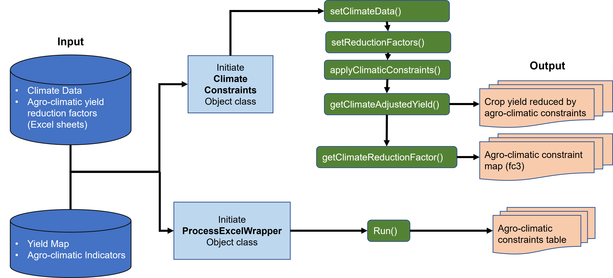

Introduction¶
In this module, various yield reduction factors will be applied to the maximum attainable yield estimated from Module 2 to consider the constraining effects which are difficult to simulate during the crop cycle simulation. For example, climatic effects can be pests, diseases, and poor workability due to excess soil moisture. These effects, in turn, depend on the different levels of inputs, LGP and LGP Equivalent.
All of the reduction factors used in Modules 3, 4, and 5 are located in 2 parameter files corresponding to irrigated and rain-fed conditions. These files MUST be edited with the reduction factors values corresponding to each crop and input level. Users are strongly encouraged to advise to use specific reduction factors based on national research for national-level analysis. This module considers four types of agro-climatic constraints:
- Pests, diseases, and weeds damages on plant growth (‘b’ group).
- Pests, diseases, and weeds damages on produce’s quality (‘c’ group).
- Climatic factors affecting the efficiency of farming operations (‘d’ group).
- Frost hazards (‘e’ group).
Note: The existing ‘a’ group corresponding with yield reduction due to rainfall variability (by GAEZ v4 documentation) is not considered in PyAEZ. See the GAEZ v4 Model Documentation for further details on the climate constraints (Fischer et al., 2021).
In PyAEZ v2.3, we have included two different types of object classes: ClimaticConstraints and ProcessExcelWrapper. ClimaticConstraints object class handls the calculation of agro-climatic constraints factor for yield reduction while ProcessExcelWrapper, a newly introduced object class, contains an all-round wrapper function to extract user-specified crop/LUT's agro-climatic factors from GAEZ Appendices excel sheet automatically instead of manual value retrieval from the data sheet.
To apply yield reduction due to agro-climatic constraints, firstly an object class named ClimaticConstraints is required to call as shown in figure below.
Figure: Overview of Crop Simulation Routine

Initialization of M3 ClimaticConstraints Object Class Creation¶
We need to import an object class ClimaticConstraints to initiate for agro-climatic constraints by the following way of setting.
| M3 Climatic Constraints object class creation | |
|---|---|
Input
| Arguments | Description | Unit | Data Format |
|---|---|---|---|
| lat_min | minimum latitude extent | Decimal Degrees | float |
| lat_max | maximum latitude extent | Decimal Degrees | float |
| elevation | Elevation | meters | 2D NumPy Array |
| mask | Mask Layer/Region of Interest | Binary(0,1)/Categorical(1,2,...) | 2D NumPy Array |
| no_mask_value | Value of mask layer to skip calculation | Mask value from the layer. Default to 0 | Integer |
Output
| Arguments | Description | Data Type |
|---|---|---|
| None | - | - |
Setting the Climate Data¶
Next, we import the necessary climate data required for agro-climatic constraints. The function can handle both monthly and daily and will adjust the mandatory calculation accordingly. Please make sure the input climate data has 12 layers for monthly or 365 or 366 layers for daily data.
| Importing Climate Data | |
|---|---|
Input
| Arguments | Description | Unit | Data Format | Time |
|---|---|---|---|---|
| min_temp | Minimum temperature | °C | 3D-NumPy Array | Daily (365, 366)/Monthly (12) |
| max_temp | Maximum temperature | °C | 3D-NumPy Array | Daily (365, 366)/Monthly (12) |
| wind_speed | Wind speed measured at 2-meter height | ms-1 | 3D-NumPy Array | Daily (365, 366)/Monthly (12) |
| short_rad | Shortwave radiation | Wm-2 | 3D-NumPy Array | Daily (365, 366)/Monthly (12) |
| rel_humidity | Relative humidity | Decimal (0-1) | 3D-NumPy Array | Daily (365, 366)/Monthly (12) |
| precip | Total precipitation | mmday-1 | 3D-NumPy Array | Daily (365, 366)/Monthly (12) |
Output
| Arguments | Description | Data Type |
|---|---|---|
| None | - | - |
| ___ |
Setting the Agro-climatic Reduction Factors¶
Starting from v2.2, agro-climatic constraints will be provided using the excel sheet. For Module III, users must prepare two excel sheets of agro-climatic reduction factors; a single excel file must contain three separate sheets for three look-up tables:
- Mean>20 (for temperature greater than 20℃)
- Mean<10 (for temperature less than 10℃)
- Lgpt10 (for frost-free periods)
The first and second look-up tables required ‘b’, ‘c’ and ‘d’ constraints factors (represented along row) for 14 wetness days (LGPagc) class intervals. All agro-climatic reduction factors range from 0 (Most Suitable) to 100 (Not Suitable). An example excel sheet setting for mean>20 and mean<10 is provided below in Table 13 and Table 14. Notice that there are two categories for LGPagc of 365 days, namely 365+ and 365-, depending on the number months where monthly precipitation is greater than monthly reference evapotranspiration (ETo). For locations with monthly precipitation greater than monthly ETo for all months, 365+ column will be used, otherwise, 365- column will be used.
For ‘e’ constraints factor settings, users will need to set up in lgpt10 spreadsheet and set up reduction factors for 13 lgpt10 interval classes. An example excel sheet setting for lgpt10 is provided in the table below . If the considered LUT/crops are not frost-sensitive, reduction factor for all day intervals should set up zero to cancel out ‘e’ constraint consideration.
During excel sheet preparation, users are advised to set up the column names and row names as strings in excel software before importing into the object class. Note also that the module calculates for a single water supply management. For instance, if users run Module III for rainfed condition, you will need to rerun with different yield and excel sheets for irrigated condition.
The calling of importing the excel sheet of agro-climatic constraints are as follows:
| Importing Reduction Factors | |
|---|---|
Input
| Arguments | Description | Unit | Data Format |
|---|---|---|---|
| file_path | The full filepath where the excel sheet for agro-climatic constraints for rainfed/irrigated conditions. | None | String |
Output
| Arguments | Description | Unit | Data Format |
|---|---|---|---|
| None | - | - | - |
Table: Agro-climatic Constraint Settings for Temperature Greater than 20 °C (Example for Irrigated Maize)
| type | 0,29 | 30,59 | 60,89 | 90,119 | 120,149 | 150,179 | 180,209 | 210,239 | 240,269 | 270,299 | 300,329 | 330,364 | 365- | 365+ |
|---|---|---|---|---|---|---|---|---|---|---|---|---|---|---|
| b | 0 | 0 | 0 | 0 | 0 | 0 | 0 | 0 | 25 | 25 | 25 | 25 | 25 | 50 |
| c | 50 | 50 | 50 | 25 | 0 | 0 | 0 | 0 | 0 | 0 | 0 | 25 | 25 | 50 |
| d | 0 | 0 | 0 | 0 | 0 | 0 | 0 | 10 | 30 | 30 | 30 | 30 | 30 | 30 |
Table: Agro-climatic Constraint Settings for Temperature Less than 10°C (Example for Irrigated Maize)
| type | 0,29 | 30,59 | 60,89 | 90,119 | 120,149 | 150,179 | 180,209 | 210,239 | 240,269 | 270,299 | 300,329 | 330,364 | 365- | 365+ |
|---|---|---|---|---|---|---|---|---|---|---|---|---|---|---|
| b | 0 | 0 | 0 | 0 | 0 | 0 | 0 | 0 | 10 | 10 | 10 | 10 | 10 | 30 |
| c | 30 | 30 | 30 | 10 | 0 | 0 | 0 | 0 | 0 | 0 | 0 | 10 | 10 | 30 |
| d | 0 | 0 | 0 | 0 | 0 | 0 | 0 | 10 | 30 | 30 | 30 | 30 | 30 | 30 |
Table: Agro-climatic Constraint Settings Frost-Free Periods (Example for Irrigated Maize)
| type | 0,29 | 30,59 | 60,89 | 90,119 | 120,149 | 150,179 | 180,209 | 210,239 | 240,269 | 270,299 | 300,329 | 330,364 | 365 |
|---|---|---|---|---|---|---|---|---|---|---|---|---|---|
| lgpt10 | 0 | 0 | 0 | 0 | 0 | 0 | 0 | 0 | 0 | 0 | 0 | 0 | 0 |
Main Functionalities¶
Applying Climatic Constraints¶
Once all the mandatory functions are all executed, the yield reduction due to agro-climatic constraints (fc3) can now be applied by using the following function.
| Applying the agro-climatic constraints | |
|---|---|
Input
| Arguments | Description | Unit | Data Format |
|---|---|---|---|
| yield_input | Input Yield | kg/ha | 2D-NumPy Array |
| lgp | Length of Growing Period | Days | 2D-NumPy Array |
| lgp_equv | Equivalent Length of Growing Period | Days | 2D-NumPy Array |
| lgpt10 | Frost-Free Periods | Days | 2D-NumPy Array |
| omit_yld_0 | 1 = Any pixels with zero yield will not calculate fc3, 0 = Calculate fc3 regardless of input yield value | Binary (1,0) | Integer |
Output
| Arguments | Description | Unit | Data Format |
|---|---|---|---|
| None | - | - | - |
Climate Adjusted Yield¶
This function returns the adjusted yield map with agro-climatic constraints applied based on the settings above.
| Get Climate-Adjusted Yield | |
|---|---|
Input
| Arguments | Description | Unit | Data Format |
|---|---|---|---|
| None | - | - | - |
Output
| Arguments | Description | Unit | Data Format |
|---|---|---|---|
| clim_adj_yld | Climate adjusted yield (rainfed/irrigated) | kg/ha | 2D-NumPy Array |
Agro-climatic Suitability Factor (Fc3)¶
This function returns yield reduction factor due to agro-climatic constraints for a specific management level. The value ranges from 0 (most limiting condition) to 1 (the most suitable condition).
| Get Fc3 map | |
|---|---|
Input
| Arguments | Description | Unit | Data Format |
|---|---|---|---|
| None | - | - | - |
Output
| Arguments | Description | Unit | Data Format |
|---|---|---|---|
| fc3 | Yield reduction factor due to agro-climatic constraints (rainfed/irrigated) | None | 2D-NumPy Array |
Initialization of M3 ProcessExcelWrapper Object Class¶
In order to automatically extract the crop/management-specific agro-climatic factors tables as excel sheet, an object class ProcessExcelWrapper is called.
| Calling ProcessExcelWriter | |
|---|---|
Extraction of Agro-climatic Factor Table¶
Users need to identify the crop and managments, cycle length, water supply and data sheet from GAEZ Data Sheet to execute the following function.
Input
| Arguments | Description | Unit | Data Format |
|---|---|---|---|
| filename_input | GAEZ Data Appendix excel sheet. | - | xlsx format |
| crop_name | Name of the crop. Must refer to the filename_input |
- | String |
| crop_cycle_length | Reference cycle length | Days | Integer |
| input_management | Rainfed ['rainfed','rain-fed','Rainfed','RainFed', 'RAINFED','r','R', 'rf','RF'], Irrigated ['irrigated','Irrigated', 'IRRIGATED', 'I','ir'] | - | String |
| output_path | Full file path to save user-specified excel sheet. | - | .xlsx format |
Output
| Arguments | Description | Unit | Data Format |
|---|---|---|---|
| None | - | - | - |
Execution Run¶
Once the setting is completed, users can now execute the extraction process.
| Execute running | |
|---|---|
Input
| Arguments | Description | Unit | Data Format |
|---|---|---|---|
| None | - | - | - |
Output
The output will be saved at the output_path directory as xlsx file format.
__